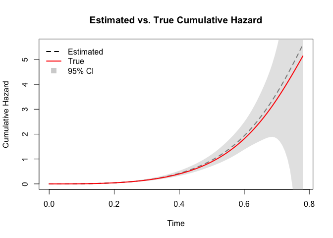

To address collaborative inference for the Cox proportional hazards model in distributed data settings, we introduce COLSA (Collaborative Likelihood-based Survival Analysis). COLSA uses basis function expansion to approximate the baseline hazard and performs sequential updates to efficiently incorporate distributed data batches. Key features of COLSA include:
- Dynamic Basis Expansion: The number of basis functions is adaptively adjusted as new data batches arrive, balancing bias and variance.
- Sequential Model Updates: COLSA updates the model iteratively with each incoming batch, using a pre-estimated Hessian matrix for the baseline hazard to reduce bias from previous batches.
Example
In the simulation study, we considered two continuous and two categorical covariates. The continuous covariates were independently generated from a bivariate normal distribution. The first categorical covariate was simulated from a Bernoulli distribution, while the second categorical covariate, comprising four levels, was drawn from a multinomial distribution whose probability mass function depended on the levels of the first categorical variable.
Event times were generated from a mixture of Weibull distributions, with shape parameters 3 and 5 and scale parameters 10 and 20, respectively. Censoring times followed an exponential distribution with rate parameter 3. The observed event times were subject to right censoring. The true regression coefficients were set as
A total of six datasets were generated: the first three containing 1,500 observations each, and the remaining three containing 500 observations each. The complete dataset was randomly partitioned into these six groups.
head(sim)
#> id time status x1 x2 x31 x42 x43 x44 group
#> 1 1 0.09887412 0 10.958910 5.938538 1 0 0 1 1
#> 2 2 0.05130399 0 7.499272 6.305020 1 1 0 0 1
#> 3 3 0.26820027 1 4.589824 4.250194 1 0 0 1 1
#> 4 4 0.14401458 1 4.528155 5.301456 1 0 1 0 1
#> 5 5 0.24992644 0 5.469901 5.624268 0 0 0 1 1
#> 6 6 0.40221177 1 5.063252 6.157249 1 0 0 1 1The COLSA procedure involves:
- Optimal Basis Selection: Evaluate the Akaike Information Criterion (AIC) across a range of basis function counts and select the number that minimizes AIC.
- Initial Model Fitting: Fit the Cox model to the first data batch using the selected basis functions.
- Sequential Updating: For each subsequent batch: (a) update model parameters with the new data; (b) adjust the number of basis functions according to the rate , where is the cumulative sample size; (c) pre-estimate the Hessian of the baseline hazard to mitigate bias in its estimation.
This procedure enables scalable and communication-efficient survival analysis under distributed settings while preserving statistical efficiency.
formula <- Surv(time, status) ~ x1 + x2 + x31 + x42 + x43 + x44
boundary <- c(0, max(sim$time))
df_sub <- sim[sim$group == 1, , drop = FALSE]
aics <- sapply(seq_len(5), function(n_basis) {
AIC(colsa(formula, df_sub, n_basis, boundary, scale = 1))
})
n_basis_best <- which.min(aics)
alpha_best <- n_basis_best / nrow(df_sub)^0.2
fit <- colsa(formula, df_sub, n_basis_best, boundary)
for (batch in 2:6) {
df_sub <- sim[sim$group == batch, , drop = FALSE]
fit <- update(fit, df_sub, alpha = alpha_best)
}The model updating process continues sequentially through all six data batches. Upon incorporating data from the 6th site, we obtain the final model fit. The summary of the fitted COLSA model is shown below:
summary(fit)
#> Call:
#> update.colsa(object = fit, newdata = df_sub, alpha = alpha_best)
#>
#> Number of basis functions: 5
#>
#> coef exp(coef) se z p
#> x1 0.15629 1.16917 0.01006 15.541 < 2e-16 ***
#> x2 -0.16807 0.84530 0.02121 -7.924 2.31e-15 ***
#> x31 0.38319 1.46696 0.05689 6.735 1.64e-11 ***
#> x42 0.28892 1.33499 0.08805 3.281 0.00103 **
#> x43 0.30574 1.35763 0.08028 3.808 0.00014 ***
#> x44 0.19363 1.21364 0.07950 2.436 0.01487 *
#> ---
#> Signif. codes: 0 '***' 0.001 '**' 0.01 '*' 0.05 '.' 0.1 ' ' 1
#> exp(coef) exp(-coef) lower .95 upper .95
#> x1 1.1692 0.8553 1.1463 1.1924
#> x2 0.8453 1.1830 0.8109 0.8812
#> x31 1.4670 0.6817 1.3122 1.6400
#> x42 1.3350 0.7491 1.1234 1.5864
#> x43 1.3576 0.7366 1.1600 1.5890
#> x44 1.2136 0.8240 1.0385 1.4183Once the final COLSA estimate is obtained, we can construct survival curves for arbitrary covariate values. As a diagnostic step, we plot the estimated baseline cumulative hazard function and compare it to the true cumulative hazard function used in the data-generating process.

The comparison demonstrates that the COLSA method can effectively recover the true baseline cumulative hazard function, even under distributed and censored data settings. The shaded region represents the 95% confidence interval of the estimated cumulative hazard function.